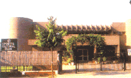

परिचय खुर्जा शहर बुलन्दशहर
खुर्जा नगर गंगा-यमुना नदियों के दोआब में स्थित है तथा महाद्वीपीय जलवायु क्षेत्र में होने के कारण अन्य मैदानी क्षेत्रों की भांति यहाँ भी ग्रीष्म काल में तेज गर्मी तथा शरद ऋतु में शीतलहर के प्रकोप के फलस्वरूप तेज ठंड होती है। गर्मियों में तापमान 44 डिग्री संेटीग्रेड तक तथा सर्दियों में न्यूनतम 4.50 डिग्री सेंटीग्रेड तक पहुँच जाता है। यहाँ पर वर्षा अधिकांषतः जून से सितम्बर माह तक होती है। शीत काल में पष्चिमी चक्रवातों के कारण कुछ वर्षा होती है, जो कि कृषि के लिए लाभकारी होती है।
उद्भव एवं विकास

यह नगर अपनी सम्पन्नता, वैभव, धार्मिक प्रवृत्ति तथा शिक्षा के प्रति अभिरूचि के लिए प्रसिद्ध हैं। इस नगर में अनेक उच्च कोटि के साहित्यकार, विचारक, लेखक, कवि, वादक, प्रशिक्षक व सेठ-साहूकार हुए, जिन्होनें देश-विदेश में इस नगर की ख्याति को बढाया। तहसील खुर्जा के नवाब छतारी श्री अहमद सईद खाँ ब्रिटिश शासन काल में प्रथम भारतीय राज्यपाल बने । वह अलीगढ़ विश्वविद्यालय के कुलपति भी रहे। तहसील के नवाब पहासू ने जयपुर का जौहरी बाजार निर्मित कराया।
खुर्जा का पॉटरी उद्योग भारत में ही नहीं बल्कि विदेश में भी विख्यात है। द्वितीय विश्व युद्ध के दौरान यहाँ भारत सरकार द्वारा राजकीय पॉटरी प्रारम्भ की गयी। आज खुर्जा में बहुत बड़े पैमाने पर पॉटरी इकाईयों द्वारा विभिन्न प्रकार की वस्तुओं, जैसे बर्तन, चाय के सेट, फूलदान, टेबिल लैम्प, साइन्टिफिक गुड्स, इलैक्ट्रिक इंसुलेटर आदि, का निर्माण किया जा रहा है। खुर्जा शहर की ‘‘खुरचन’’ यहाँ की प्रसिद्ध मिठाई है। केन्द्रीय काँच एवं सिरेमिक अनुसंधान संस्थान खुर्जा में स्थित है।